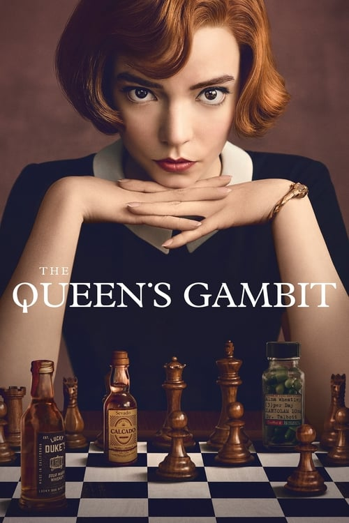

Séries
Descubra nossas séries favoritas e prepare-se para maratonar como nunca antes! De tramas intrigantes a personagens cativantes, temos tudo o que você precisa para uma jornada emocionante do começo ao fim. Mergulhe em mundos fascinantes, onde cada episódio é uma nova aventura. Seja drama, ação, comédia ou mistério, nossas séries selecionadas vão te prender ao sofá e deixar você querendo mais. Não perca tempo, escolha sua próxima obsessão e comece agora mesmo!
The Queen's Gambit (2020)
Gênero: Drama
Sinopse: Esta minissérie da Netflix acompanha a vida de Beth Harmon, uma prodigiosa jogadora de xadrez que luta contra o vício enquanto busca se tornar a maior jogadora de xadrez do mundo. Ambientada durante a Guerra Fria, a série explora temas de genialidade, isolamento e a luta pelo sucesso em um mundo dominado por homens.
WandaVision (2021)

Gênero: Super-herói, Ficção Científica, Drama
Sinopse: Uma série inovadora do universo Marvel que mistura sitcoms clássicas com o MCU. A série segue Wanda Maximoff e Vision, que vivem uma vida suburbana idealizada, mas começam a suspeitar que nem tudo é o que parece. Através de diferentes eras de sitcoms, WandaVision desvenda um mistério complexo e emocional.
As séries mais vistas em abril de 2024
Squid Game (2021)

Gênero: Suspense, Drama
Sinopse: Esta série sul-coreana se tornou um fenômeno global, seguindo um grupo de pessoas endividadas que aceitam participar de um jogo mortal para ganhar uma enorme quantia em dinheiro. Cada jogo é baseado em brincadeiras infantis coreanas, mas com consequências mortais. A série aborda temas de desigualdade social e desespero humano.
The Boys (2020-2024)

Gênero: Ação, Comédia, Drama
Sinopse: "The Boys" é uma série que subverte o gênero de super-heróis, apresentando um grupo de vigilantes que tenta derrubar super-heróis corruptos e abusivos. Ambientada em um mundo onde super-heróis são tratados como celebridades, a série é conhecida por seu humor negro, violência gráfica e crítica social.
As séries mais vistas em 2024
On the Roam
Gênero: Suspense, Drama
Sinopse: "On the Roam" é uma série documental estrelada por Jason Momoa, que explora a vida e as paixões de pessoas criativas em diversas áreas. Viajando pelo mundo, Momoa conhece artistas, artesãos e músicos que se dedicam ao que amam com autenticidade. A série destaca seus processos criativos, histórias pessoais e desafios, enquanto Momoa reflete sobre a busca por propósito e a conexão com a natureza e a cultura. É uma celebração da criatividade, da comunidade e do espírito humano, inspirando os espectadores a viverem suas paixões.
Depois do Acidente
Gênero: Ação, Comédia, Drama
Sinopse: "Depois do Acidente" é uma série documental brasileira que acompanha a vida de pessoas que sobreviveram a acidentes graves e enfrentam os desafios da recuperação física e emocional. Cada episódio foca em uma história real, mostrando o impacto do acidente na vida das vítimas e suas famílias, bem como o processo de superação e resiliência. A série explora temas como dor, esperança e força interior, destacando a luta diária para reconstruir a vida após momentos traumáticos. É um retrato poderoso da capacidade humana de enfrentar adversidades e encontrar novos significados na vida.